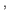

The low- extended magnetohydrodynamics (low-
extended magnetohydrodynamics (low- XMHD)
model is obtained by taking the large-guide-field and cold-ion limit
of the extended MHD model. The resulting model is appealing owing
to its simplicity (it is a small set of scalar equations), and because
it describes a wide range of laboratory magnetic confinement devices,
the solar corona, and other astrophysical plasmas in which large guide
fields are present.
XMHD)
model is obtained by taking the large-guide-field and cold-ion limit
of the extended MHD model. The resulting model is appealing owing
to its simplicity (it is a small set of scalar equations), and because
it describes a wide range of laboratory magnetic confinement devices,
the solar corona, and other astrophysical plasmas in which large guide
fields are present.
However, the numerical integration of the low- XMHD system
is non-trivial due to the presence of disparate time and length scales,
which demand both spatial adaptivity and efficient implicit integration
methods for efficiency. The large time-scale disparity originates
in the presence of fast dispersive waves, which result in significant
numerical stiffness and the need of high-order dissipation operators
to prevent numerical noise in nonlinear regimes. Both dispersive hyperbolic
systems and high-order differential operators stress numerical algorithms,
and benefit from an implicit treatment.
XMHD system
is non-trivial due to the presence of disparate time and length scales,
which demand both spatial adaptivity and efficient implicit integration
methods for efficiency. The large time-scale disparity originates
in the presence of fast dispersive waves, which result in significant
numerical stiffness and the need of high-order dissipation operators
to prevent numerical noise in nonlinear regimes. Both dispersive hyperbolic
systems and high-order differential operators stress numerical algorithms,
and benefit from an implicit treatment.
Despite the relevance of the low- XMHD system in the study
of magnetized plasmas, to our knowledge there is scant effort devoted
towards the development of modern, efficient implicit algorithms for
the numerical solution of the low-
XMHD system in the study
of magnetized plasmas, to our knowledge there is scant effort devoted
towards the development of modern, efficient implicit algorithms for
the numerical solution of the low- XMHD model. There are several
efforts in the literature record that employ implicit timestepping,1
XMHD model. There are several
efforts in the literature record that employ implicit timestepping,1

2 3 but only the latter reference makes some effort to characterize the solver performance. It employs a Newton-Krylov-Schwarz implicit parallel solver, with incomplete ILU methods with various degrees of overlap in each parallel domain. Performance is quite sensitive to the domain overlap, and iteration count is quite high, but scales reasonably well in parallel. Reported speedups with respect to explicit approaches are at most of an order of magnitude for a 1980 1980 mesh.
The focus of this paper is to demonstrate an efficient, optimal nonlinearly
implicit algorithm for the low- XMHD model. The approach uses
Jacobian-free Newton-Krylov (JFNK) methods, effectively preconditioned
using physics-based approximations of the Jacobian system that are
multigrid-friendly, and therefore deliver optimal convergence rates.
The preconditioning approach presented here leverages earlier developments
of effective physics-based preconditioners for MHD4 and extended MHD,5 and in particular employs a similar parabolization strategy to that
presented in these studies. We demonstrate the performance of the
algorithm with challenging numerical examples. In particular, we demonstrate
optimal scaling under mesh refinement, and CPU speedups with respect
to explicit methods of 2 to 3 orders of magnitude even for moderate
meshes (256
256). We apply the algorithms to the problem of
fast reconnection in the large-guide-field regime to derive new physical
insight for this challenging problem.
XMHD model. The approach uses
Jacobian-free Newton-Krylov (JFNK) methods, effectively preconditioned
using physics-based approximations of the Jacobian system that are
multigrid-friendly, and therefore deliver optimal convergence rates.
The preconditioning approach presented here leverages earlier developments
of effective physics-based preconditioners for MHD4 and extended MHD,5 and in particular employs a similar parabolization strategy to that
presented in these studies. We demonstrate the performance of the
algorithm with challenging numerical examples. In particular, we demonstrate
optimal scaling under mesh refinement, and CPU speedups with respect
to explicit methods of 2 to 3 orders of magnitude even for moderate
meshes (256
256). We apply the algorithms to the problem of
fast reconnection in the large-guide-field regime to derive new physical
insight for this challenging problem.